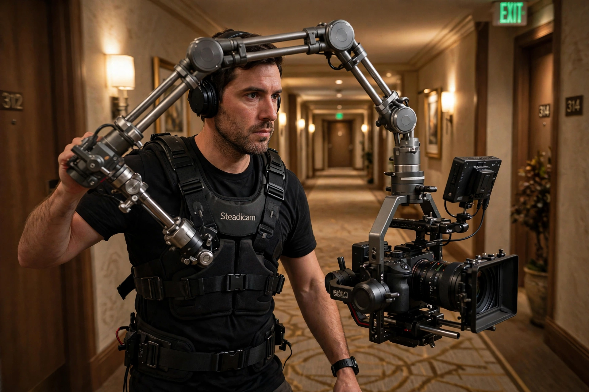

| Steadicam | |
| Type | Camera stabilizer |
|---|---|
| Inventor | Garrett Brown |
| Introduced | 1975 |
| Manufacturer | Tiffen |

The Steadicam is a brand of camera stabilizer mounts for motion picture cameras invented by Garrett Brown and introduced in 1975 by Cinema Products Corporation. The Steadicam isolates the camera from the operator's movement, allowing a smooth shot even when the camera moves over an irregular surface. It mechanically combines the stable elements of a traditional tripod mount with the fluid movement of a dolly shot and the flexibility of a handheld camera, enabling shots that glide through spaces in ways that would previously have required extensive track laying.
American inventor and cameraman Garrett Brown developed the stabilizer in the early 1970s, originally calling it the "Brown Stabilizer". After patenting the device, Brown licensed it to Cinema Products Corporation, which named it Steadicam and introduced it in 1975. The first feature film to use it extensively was Hal Ashby's Bound for Glory (1976), shot by Haskell Wexler, whose celebrated shot following David Carradine through a migrant camp demonstrated the device's potential.
The Steadicam came to wide attention with Stanley Kubrick's The Shining (1980), where Brown operated shots gliding through the corridors of the Overlook Hotel and following Danny Torrance on his tricycle. Rocky (1976) also used it for the famous run up the steps of the Philadelphia Museum of Art. Brown won an Academy Award for Scientific and Technical Achievement for the invention.
The operator wears a support vest to which an iso-elastic articulated arm is attached. The arm supports a sled consisting of the camera, a monitor, batteries, and counterweights, balanced on a free-moving gimbal. Because the system's center of mass sits at the operator's fingertips on the gimbal, small rotational movements of the operator's body are not transmitted to the camera, and the arm absorbs vertical bumps from walking.
The Steadicam transformed cinematography and spawned numerous imitators and descendants, including the Glidecam and a generation of electronic gimbal stabilizers such as the DJI Ronin and Freefly MōVI. Long single-take tracking shots in films such as Martin Scorsese's Goodfellas (1990), with its famous Copacabana entrance shot, became emblematic of the technology.